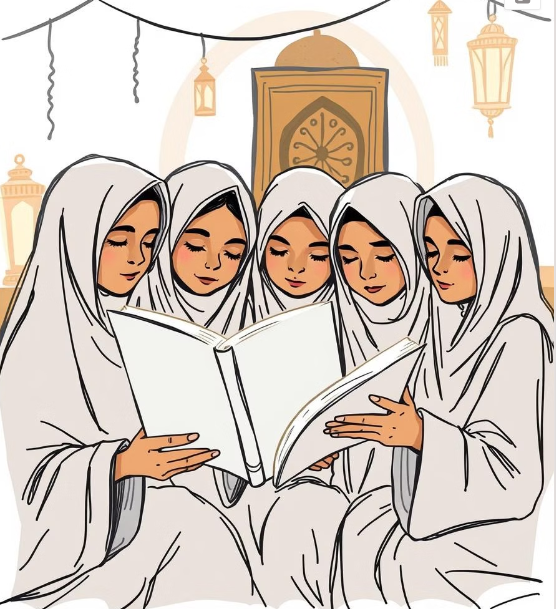

هذا الكتاب يحتوي على قصص الأنبياء المستوحاة من القرآن الكريم والسنة النبوية، لنتعلم منها الدروس والعبر.
وُلد النبي محمد ﷺ في مكة المكرمة، ونشأ يتيمًا لكنه كان معروفًا بالصادق الأمين. بعثه الله برسالة الإسلام لينشر النور والهداية في الأرض.
تعلمنا قصة يوسف عليه السلام الصبر والإيمان، فقد أُلقي في البئر ثم بيع كعبد لكنه أصبح ملكًا بفضل حكمته.